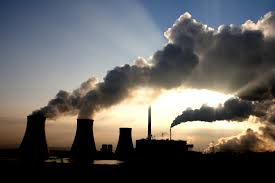
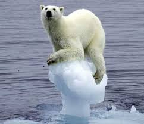
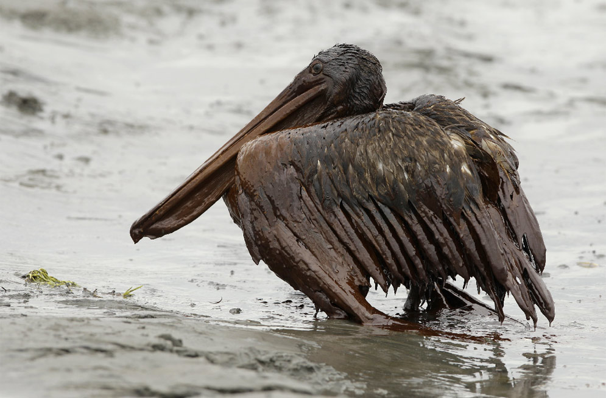

CONTAMINACIÓN
.jpg)
Contaminación
La Contaminación se denomina a la presencia en el ambiente de cualquier agente químico, físico o biológico nocivos para la salud o el bienestar de la población, de la vida animal o vegetal. Esta degradación del medio ambiente por un contaminante externo puede provocar daños en la vida cotidiana del ser humano y alterar las condiciones de supervivencia de la flora y la fauna.
Alrededor de 2 millones de personas podrían morir cada año por alguna causa atribuible a la contaminación atmosférica, asegura la Organización Mundial de la Salud. Según este estudio la mayor cantidad de muertes se producen en los países en desarrollo donde se concentran altas densidades de partículas nocivas para la salud. La población humana crece según una progresión geométrica y la demanda de alimentos y necesidades básicas para la vida del hombre son cada vez mayores. El aumento en el consumo de diversos productos y desechos, provocados por el ser humano, trae como consecuencia la generación de sustancias tóxicas.
Diferentes tipos de contaminación están clasificados por su parte que afectan o resultan por las causas de contaminación particulares. Cada uno de estos tipos tiene sus propias causas y consecuencias distintivas. El estudio de la contaminación ambiental ayuda a entender los conceptos básicos con mayor detalle y producir protocolos para los tipos específicos. En consecuencia, los principales tipos de contaminación son.
La contaminación puede ocurrir, en el suelo, la tierra y el aire.
Se puede dividir en clases según los agentes contaminantes o el medio afectado:
1.-Contaminación Atmosférica: producto de las emisiones de gases tóxicos a la atmósfera terrestre, como el dióxido de carbono.
2.-Contaminación del Agua: presencia de desechos en el agua, como los vertidos de industrias y las aguas servidas.
3.-Contaminación del Suelo: presencia de desechos en el suelo, a causa de actividades agrícolas y ganaderas.
4.-Contaminación Sonora: presencia de altos decibelios en algún lugar determinado.
5.-Contaminación Química: un compuesto químico se introduce en el medio.
6.-Contaminación Radiactiva: dispersión de materiales radiactivos accidentalmente.
7.-Contaminación Térmica: emisión de fluidos a elevada temperatura.
8.-Contaminación Electromagnética: radiaciones del espectro electromagnético que son perjudiciales para los seres vivos.
9.-Contaminación Microbiológica: Producida por microorganismos, como en la manipulación inadecuada de alimentos.
.jpg)
.jpg)
.jpg)
• desechos sólidos domésticos.
• desechos sólidos industriales.
• exceso de fertilizante y productos químicos.
• tala.
• quema.
• basura.
• el monóxido de carbono de los vehículos.
• desagües de aguas negras o contaminadas al mar o ríos.
Muchas de las causas del deterioro ambiental es debido a : la sobreexplotación , destrucción del hábitat , la contaminación , la erosión y la deforestacion . Estudios realizados dicen que el deterioro del medio ambiente provoca el 21% de los problemas de salud que sufre la población mundial .
.jpg)

La contaminación ambiental deteriora cada vez mas a nuestro planeta y a nosotros mismos pues según investigaciones al respirar el aire contaminado esto afecta nuestra salud cardiovascular por lo que normas estrictas de aire limpio contribuirían a una mejor salud con efectos en gran escala.
Otra consecuencia es el debilitamiento de la capa de ozono, que protege a los seres vivos de la radiación ultravioleta del Sol, debido a la destrucción del ozono estratosférico y esto provoca el calentamiento global.La contaminacion al medio atenta contra la vida de plantas, animales y personas, genera daños físicos en los individuos, convierte en un elemento no consumible al agua y hace que en los suelos contaminados no sea posible la siembra. Esto afecta a demás el clima y las actividades realizadas por el ser humano dañandolo y perjudicándole.
.jpg)
De acuerdo con esta regla, la fecha más tardía posible para Semana Santa sería el 25 de Abril, la próxima ocurrencia será en 2038. La más temprana el 22 de Marzo, en 2285. La mayoría de las veces, la Semana Santa cae durante la primera semana de Abril.
Las consecuencias en la salud por la presencia de Dióxido de Sulfuro y Dióxido de Nitrógeno, que son dos de los agentes más perjudiciales para la salud, son desde irritación de ojos, nariz y garganta hasta infecciones respiratorias, como bronquitis y neumonía. Y a largo plazo puede significar infecciones respiratorias crónicas, cáncer de pulmón, problemas cardíacos e incluso daño cerebral y en el sistema nervioso.
.jpg)
La contaminación está acabando con la vida de muchas especies. Cada día aumenta su proporción en nuestro planeta siendo el ser humanso el mayor causante de esta avería, sabiendo que el humanso, el ser más inteligente sería tan incapaz de cuidar su propio planeta... Ahora estamos en el siglo XXI, ha empeorado las cosas ya que han inventado tantos materiales químicos que están dañando demasiado a nuestro planeta.
.jpg)
La polución, la basura, la destrucción de la capa de ozono son factores que destruyen el medio ambiente. Puntos principales en contaminación, fábricas que despiden mucho humo que contamina el aire que respiramos.
PREVENCION DE LA CONTAMINACION AMBIENTAL
• no quemar ni talar plantas.
• controlar el uso de fertilizantes y pesticidas.
• no botar basura en lugares inapropiados .
• regular el servicio de aseo urbano.
• crear conciencia ciudadana .
• crear vías de desagües para las industrias que no lleguen a los mares ni ríos utilizados para el servicio o consumo del hombre ni animales.
• controlar los derramamientos accidentales de petróleo .
• controlar los relaves mineros.
.jpg)
¿Cómo podemos colaborar?
1.-Utilización de catalizadores en los coches para disminuir los gases contaminantes que despiden.
2.-Empleo del transporte público y medios ecológicos para contaminar menos. Recuperación de aguas: se pueden recuperar de forma química a través de tratamientos biológicos, con organismos que descomponen la materia orgánica en nitrato y en dióxido de carbono.
3.-Eliminación de acumulación de nutrientes en lagos pequeños: estos nutrientes provienen de restos de plantas muertas que podrían provocar eutrofización del agua.
4.-No abusar de fertilizantes y pesticidas en cultivos y cosechas: para poder eliminar el nitrato del suelo se utilizan métodos biológicos como el cultivo de bacterias desnitrificantes.
5.-Reciclar es una actividad en la que todos podemos colaborar: separar los materiales de forma correcta y procurar que su recogida selectiva se realice en el punto de origen para no contaminar al transportarse.
6.-Evitar hacer ruidos molestos: porque la contaminación sonora es una de las causas principales de molestias a nivel psicológico como el estrés.
7.-Al comprar productos para el hogar, procurar que sean lo menos contaminantes posible. Reforestación: recuperar áreas donde se ha producido una tala indiscriminada de árboles y plantas. Ahorrar agua y buscar métodos para reciclarla: el agua que utilizamos en los hogares se puede reutilizar.
8.-Uso de energías alternativas como la solar y la eólica.
Se necesita un cambio importante en la sociedad para que las generaciones futuras tengan un lugar limpio.
La contaminación ambiental y suelo

La contaminación ambiental es también la incorporación a los cuerpos receptores de sustancias sólidas, liquidas o gaseosas, o mezclas de ellas, siempre que alteren desfavorablemente las condiciones naturales del mismo, o que puedan afectar la salud, la higiene o el bienestar del público.

La contaminación del suelo produce un desequilibrio físico, químico y biológico que afecta negativamente las plantas, animales y humanos.
Contaminación Visual
La contaminación visual se refiere al abuso de ciertos elementos “no arquitectónicos” que alteran la estética, la imagen del paisaje tanto rural como urbano, y que generan, a menudo, una sobreestimulación visual agresiva, invasiva y simultánea.
La contaminación del aire es provocada por diversas sustancias en el aire, como óxidos de azufre y nitrógeno, monóxido de carbono, material compuesto por partículas, y compuestos orgánicos volátiles (COV). Los COV son materiales que, en presencia de la luz del sol, son capaces de producir gas ozono en la capa más baja de la atmósfera de la Tierra (la tropósfera). El ozono que se encuentra en la tropósfera puede producir una calidad de aire inferior y la aparición de “esmog”.